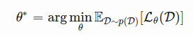
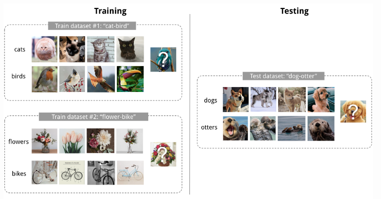
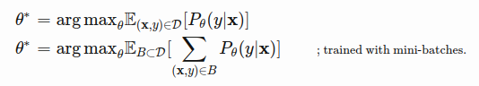
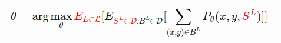
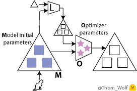
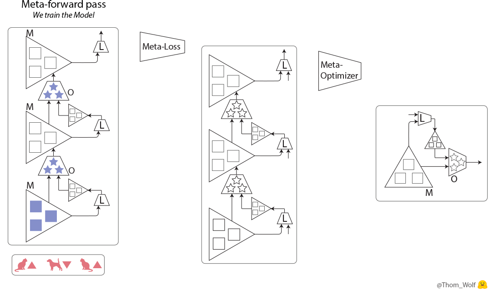

In this blog, I will explain meta-learning what is also known as learning to learn in machine learning.

What is Meta-Learning?
Current AI agents excel at mastering a particular skill like object classification, predicting a disaster, image segmentation etc. However, now AI is extensively used in day-to-day life. Almost every organization now uses AI in their products. So there is a need for a single AI agent that can solve a variety of problems. A good machine learning model often requires training with a large number of samples. Humans, in contrast, learn new concepts and skills much faster and more efficiently. Kids who have seen cats and birds only a few times can quickly tell them apart. Similar to humans, machine learning models need to be versatile and adapt to a new problem with the least number of samples. This essentially meta-learning aims to solve.
Versatility is achieved by an intelligent amalgamation of meta-learning along with related techniques such as reinforcement learning (finding suitable actions to maximize a reward), transfer learning (re-purposing a trained model for a specific task on a second related task), and active learning (learning algorithm chooses the data it wants to learn from). Such different learning techniques provide an AI agent with the brains to do multiple tasks without the need to learn every new task from scratch. Thereby making it capable of adapting intelligently to a wide variety of new, unseen situations.
Using Meta-Learning, AI agents learn how to learn new tasks by reusing prior experience, rather than examining each new task in isolation.
Approaches for Meta-Learning
There are two popular approaches to meta-learning.
The Simple View
A good meta-learning model should be trained over a variety of learning tasks and optimized for the best performance on the distribution of tasks, including potentially unseen tasks. Each task is associated with a dataset D, containing both feature vectors and true labels. The optimal model parameters are:

here one dataset is considered as one sample data point.
Few-shot classification
Few-shot classification is an instantiation of meta-learning in the field of supervised learning. The dataset D is often split into two parts, support set S for learning and a prediction set B for training or testing, D=(S, B). Often we consider a K-shot N-class classification task: the support set contains K labeled examples for each of N classes.

A dataset D contains pairs of feature vectors and labels, and each label belongs to a known label set L. Let’s say, our classifier f outputs a probability of a data point belonging to the class y given the feature vector x, Pθ(y|x). The optimal parameters should maximize the probability of true labels across multiple training batches B⊂D:

In a few-shot classification, the goal is to reduce the prediction error on data samples with unknown labels given small support set for “fast learning” (think of how “fine-tuning” works). To make the training process mimics what happens during inference, we would like to “fake” datasets with a subset of labels to avoid exposing all the labels to the model and modify the optimization procedure accordingly to encourage fast learning:
Sample a subset of labels.
Sample a support set and a training batch. Both of them only contain data points with labels belonging to the sampled label set.
The support set is part of the model input.
The final optimization uses the mini-batch to compute the loss and update the model parameters through backpropagation, in the same way as how we use it in the supervised learning
We may consider each pair of sampled datasets as one data point. The model is trained such that it can generalize to other datasets. Symbols in red are added for meta-learning in addition to the supervised learning objective.

The Learner and Meta Learner
Another popular view of meta-learning decomposes the model update into two stages:
A classifier is the learner model, trained for operating a given task;
In the meantime, an optimizer learns how to update the learner model’s parameters via the support set.
Let’s consider what happens in normal supervised training. In the figure below, M is the neural network with initial weights (blue ■) and L calculates the loss function, and O is the optimizer with parameters (pink ★). For each data sample, the model predicts, finds loss, and optimizes the model weights. This happens in the cycle.

In meta-learning, the model M is called the learner and the optimizer O is called the meta-learner. The meta-learner’s parameters are learned by back-propagating a meta-loss gradient along the training process itself, back to the initial weights of the model and/or to the parameters of the optimizer
We now have two, nested, training processes: the meta-training process of the optimizer/meta-learner in which the (meta-)forward pass includes several training steps of the model (with forward, backward, and optimization steps).

A single step of the meta-training process includes two steps of the training process of the model (vertically in the meta-forward and meta-backward boxes). The training process of the model is exactly the same training process as in supervised learning. The input of the meta-forward pass is a list of examples/labels (or a list of batches) that are used successively during the model training pass. Meta-loss is calculated to reduce the training error. It means, the lower the loss, the better the training was. A meta-optimizer is used to update the weights of the optimizer.
Thanks for reading it…